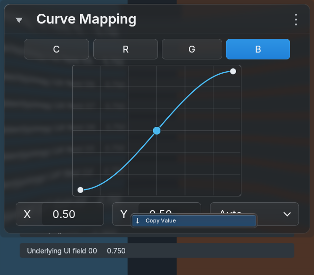
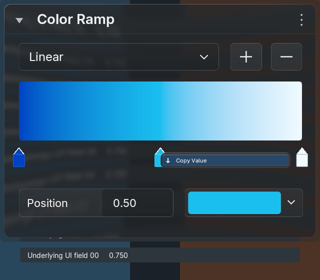
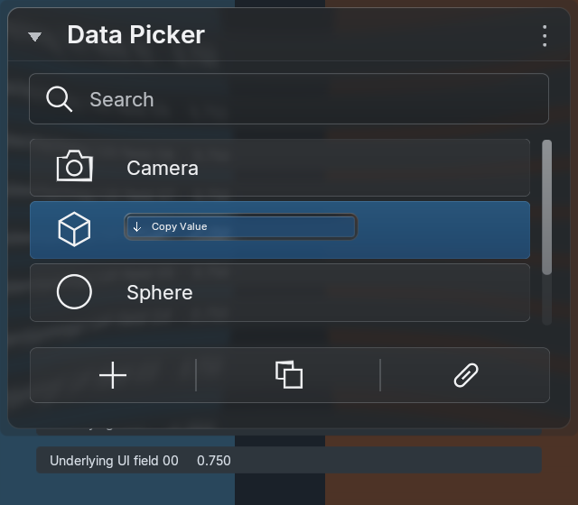
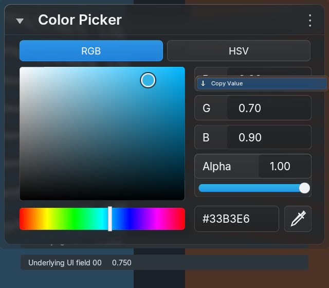
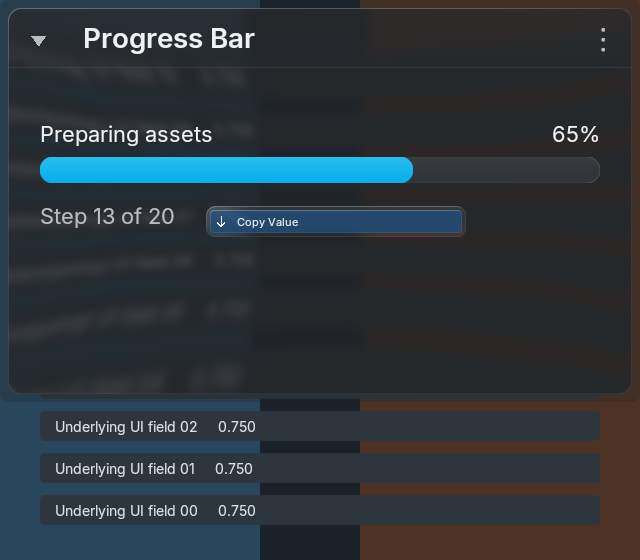
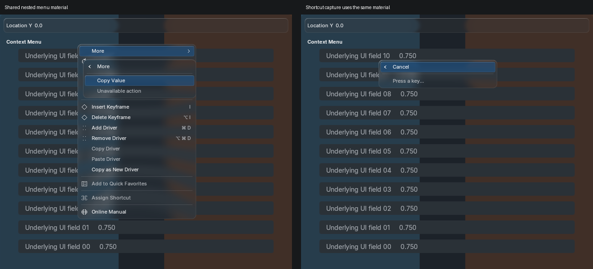
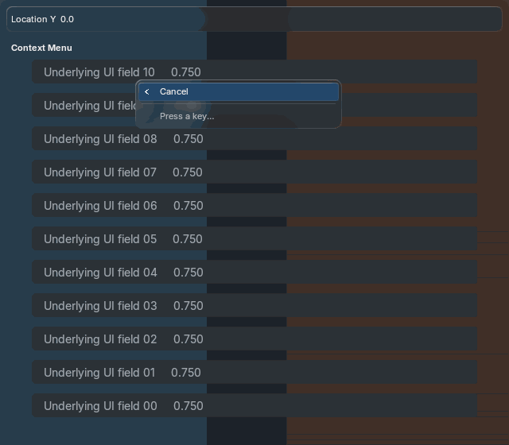

Blender 5.2.2 / Metal, 640×560, explicit REFERENCE theme. Real driver clipboard, property/operator Quick Favorites, keyboard shortcut assignment/change/removal, Edit Source and Python tooltip text are execution-tested on exact macOS arm64 5.1.2/5.2.2 builds. Private adapters fail closed elsewhere. Tyler owns visual acceptance.



Actual rendered frames, with one shared backdrop preparation, one strong blur and five retained offscreens. No capture/blur passes added per animation frame. Resting/disabled main menu pixels remain identical.





The capture process still reports a 65,624-byte Metal MTLSafeFreeList shutdown allocation, also seen in historical v1 captures. Owned glass caches clear after release. Diagnostic log; the backend cause remains unresolved.
No exact generated-reference acceptance is claimed. The rejected v1 generation and comparisons remain immutable. These captures document source-material reuse, not a new approved generated reference.
Render, resource and timing record · Before/after and acceptance status · Adapters 5.1.2 · Adapters 5.2.2 · Actual window input 5.1.2 · Actual window input 5.2.2